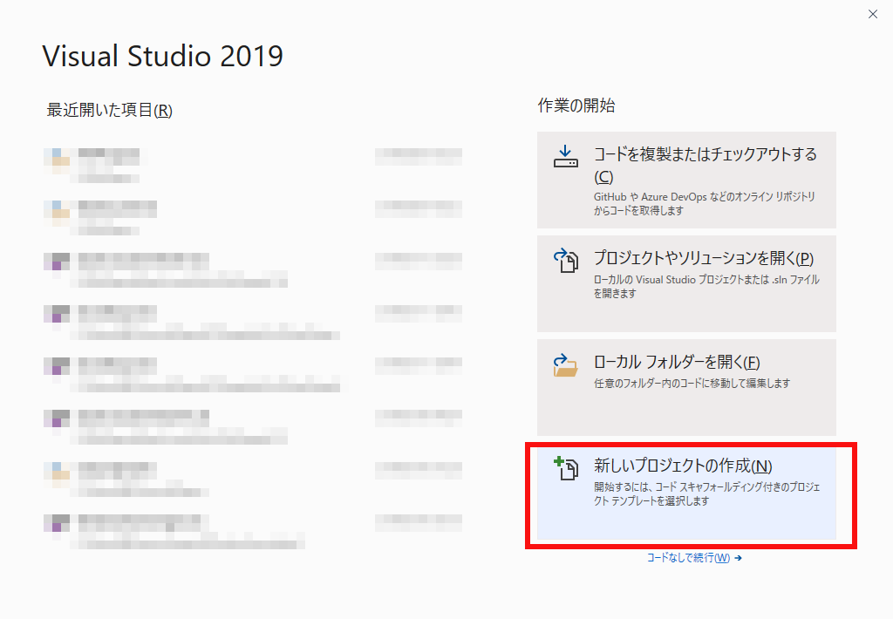
図0101a
Windowsデスクトップウェザードを選択し次へを選びます。
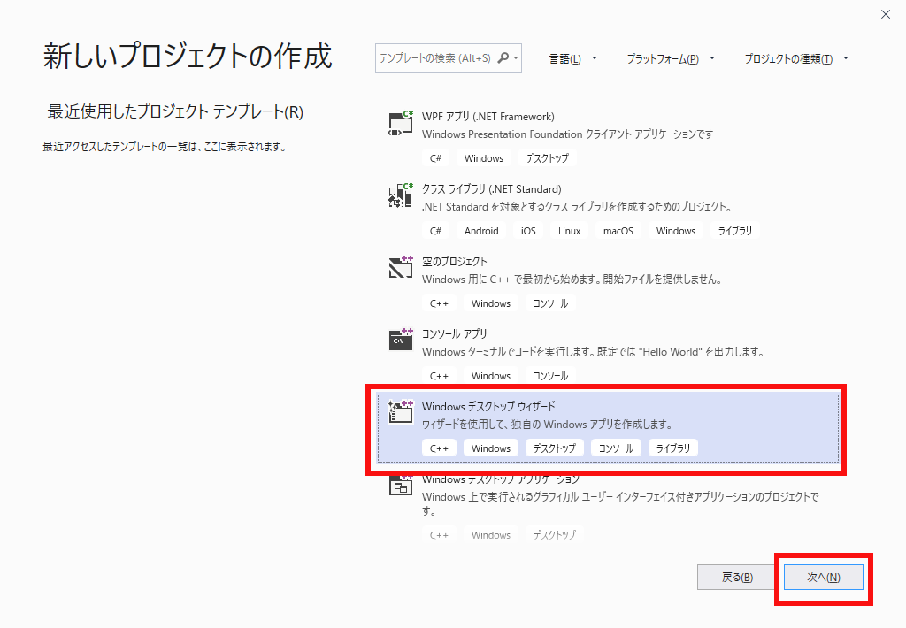
図0101b
プロジェクト名を指定し（ここではSample101としています）、配置するディレクトリを指定し作成を選びます。
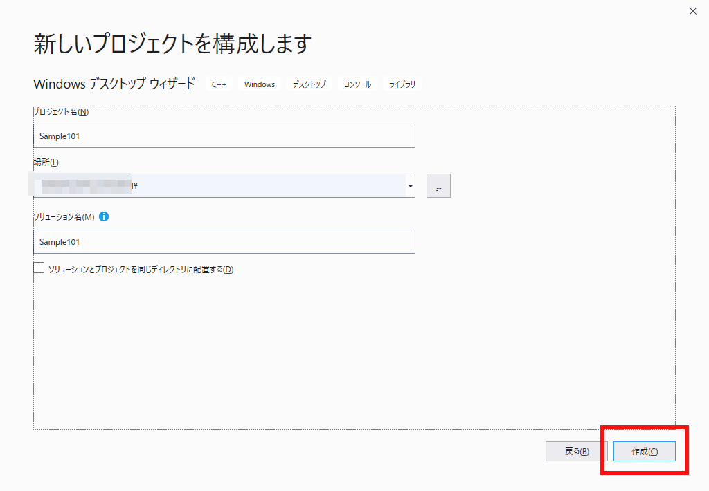
図0101c
次の画面で空のプロジェクトにチェックをいれ、OKをクリックします。
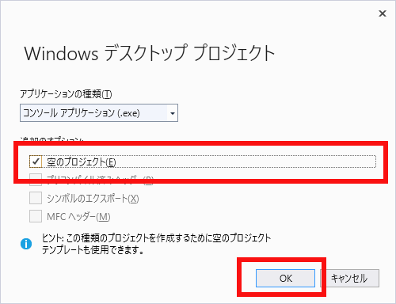
図0101d
プロジェクトが作成されますのでソリューションエクスプローラからプロジェクト名を右クリックして ビルドの依存関係－ビルドのカスタマイズを選択します
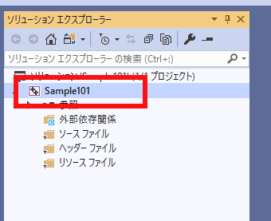
図0101e
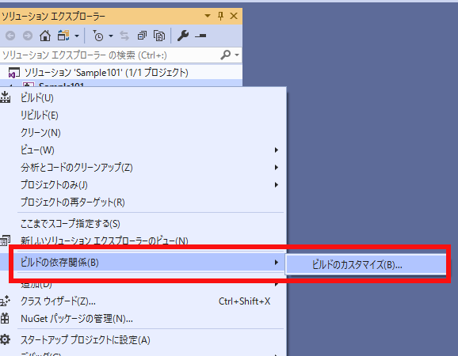
図0101f
masmを選択しOKします。
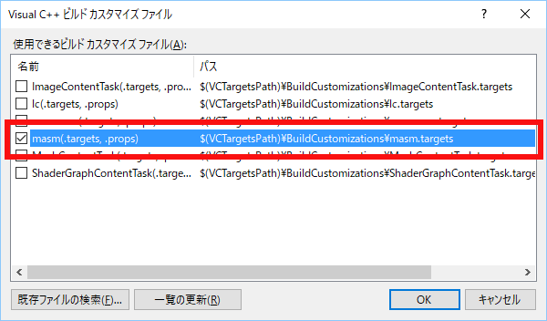
図0101g
ソースファイル－追加－新しい項目を選びます。
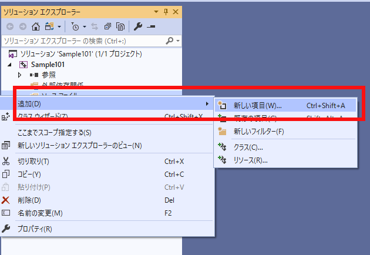
図0101h
Source.asmという名前でファイルを追加します。
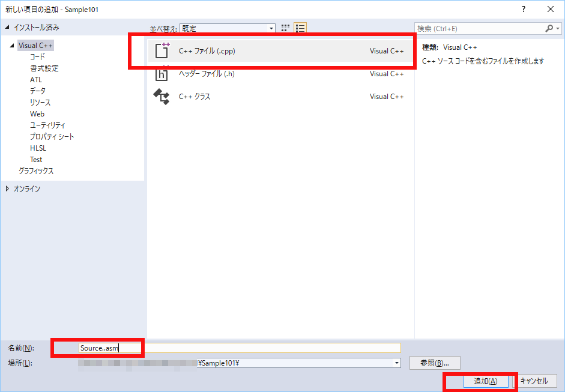
図0101i
Source.asmを右ボタンでクリックしてプロパティを開きます。
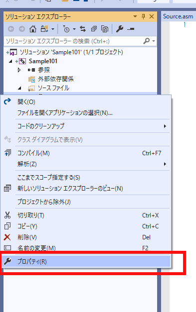
図0101j
ビルドから除外をいいえにしてカスタムビルドツールを選択して適用をクリックすると、左側に設定できるようになります。
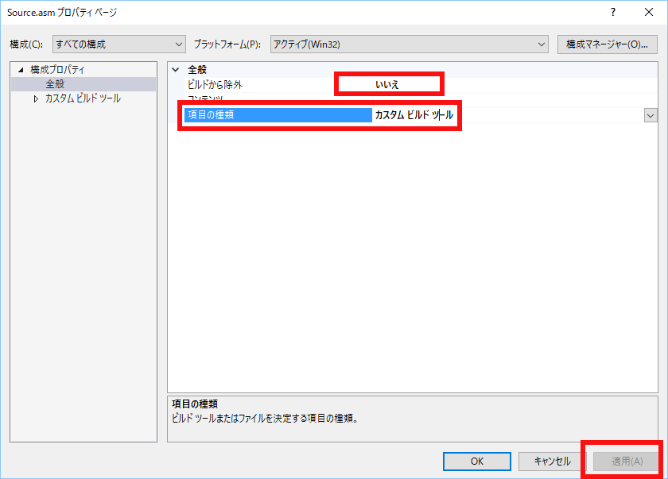
図0101k
コマンドラインおよび出力ファイルを以下のように書き換えます。
コマンドライン: ml /c /coff /Zi /Fo"$(OutDir)\%(Filename).obj" "%(Identity)" 出力ファイル: $(OutDir)\%(Filename).obj
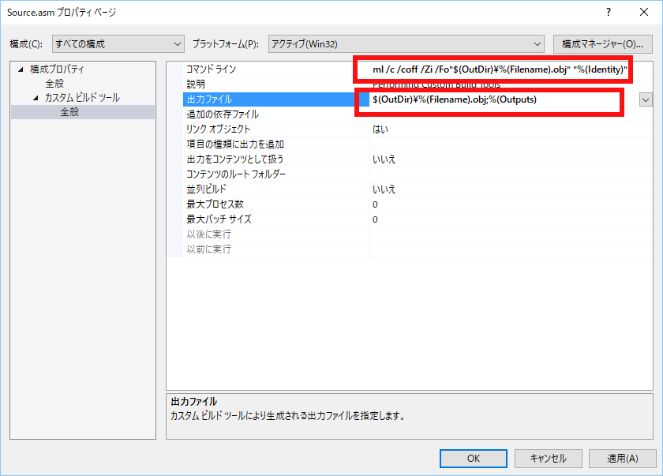
図0101l
Source.asmに以下のようにコードを記述します。
includelib libcmt.lib includelib libvcruntime.lib includelib libucrt.lib includelib legacy_stdio_definitions.lib .386 .model flat, c .stack 100h printf PROTO arg1:Ptr Byte .data msg1 byte "Hello World!", 0Ah, 0 .code main proc INVOKE printf, ADDR msg1 mov eax, 0 ret main endp end
Hello World! ...\Sample101.exe (プロセス 14188) は、コー ド 0 を伴って終了しました。 このウィンドウを閉じるには、任意のキーを押してください . . .